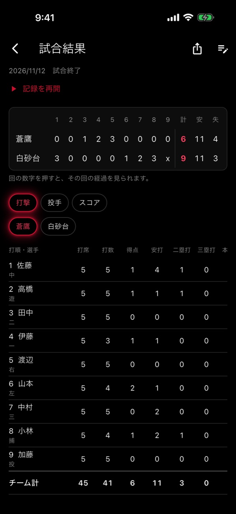
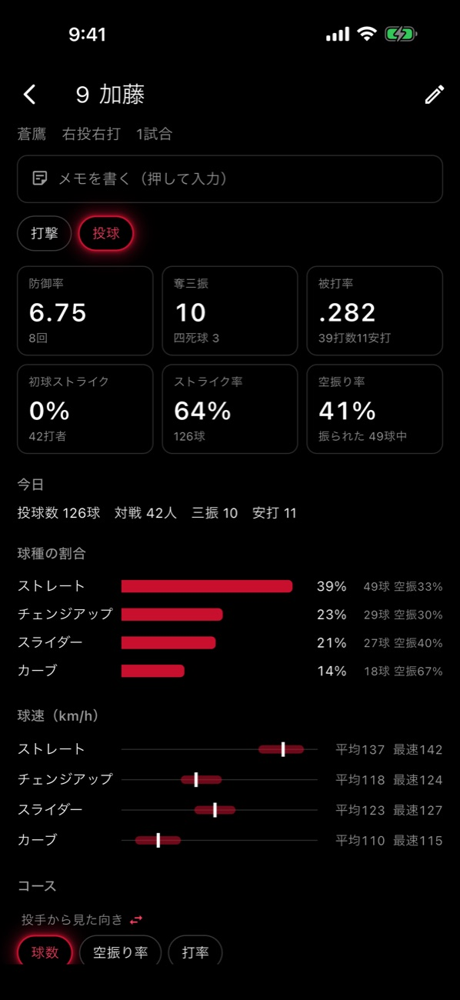

HOW IT WORKS
記録して、共有して、振り返る
-
1
記録する
ボール・ストライク・ヒット・アウトのボタンで、1 プレーを数タップで記録。ランナーの進み方はアプリが提案します。横向きでも縦向きでも使えます。
-

2チームで共有する
チームスペースに招待すれば、メンバーはそれぞれのスマホから試合の経過や結果をすぐに見られます。記録は 1 台の端末で行うので、記録が食い違いません。
-

3振り返る
通算成績・ランキング・チームの成績を自動で計算。選手ごとに打球の方向、コース別・球種別の成績、相手ごとの対戦成績まで見られます。打席ごとのメモで、指導や気づきも残せます。
DETAIL MODE
1 球ごとに、くわしく
詳細モードでは、球種・コース・球速と打球の位置まで記録できます。iPad の大きな画面なら、ストライクゾーンも大きく、ベンチでも押しやすく。
- コースは投手から見た向き・捕手から見た向きを切り替え
- 簡易モードと同じ試合の中で、途中から切り替えられる
- CSV で書き出して、表計算ソフトで分析
FOR EVERYONE
チームのみんなに
マネージャー・記録係
ボタンを押すだけで記録でき、得点・成績の計算は不要。間違えてもすぐに直せます。
監督・コーチ
試合中でも打者・投手のデータを確認。打席ごとのメモで指導の内容をチームに残せます。
選手
自分の成績や打球の傾向を、家でもスマホで振り返れます。
保護者
球場に行けない日も、試合の経過と結果をスマホで追えます。
DEVICES
対応する端末
- iPhone対応
- iPad対応
- Android今後対応予定
- PC（Web 版）今後対応予定
大切な記録は、アプリの「すべてのデータを書き出す」で年度ごとに書き出し、別の場所にも保管しておくことをおすすめします（保管のしかた）。
ご質問・ご要望は サポート へ。